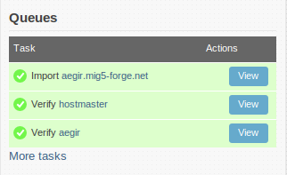

community.aegirproject.org
User Manual
This section of the handbook describe how to use Aegir in the day-to-day management of sites and platforms.
- Print entire section
- Login or register to post comments
Getting to know the interface
So you've installed Aegir, arrived at the home page of your installation and are waiting for the magic to begin. On this page we'll introduce you to Aegir and how easy it is to use.
Get to know the interface

Home
Once you've successfully completed an Aegir installation, you'll be presented with the homepage, titled 'Home'.
In a standard installation there won't be any sites listed here yet, other than the main Aegir site itself, which gets imported into the system during the installation. This is normal - Aegir even recognises itself as a Drupal site on your server, and to a limited degree is capable of 'managing' itself. Skynet is here!
Admin menu
 At the very top of the screen you'll see the Admin menu, which you may recognise as a popular contrib module installed on many other sites, perhaps even some of your own.
At the very top of the screen you'll see the Admin menu, which you may recognise as a popular contrib module installed on many other sites, perhaps even some of your own.
This gives you access to all the normal Drupal administrative functionality, which is not normally required in everyday Aegir user, but it also does provide you access to the 'Hosting' administrative settings where you can enable features that ship with Aegir and make other configuration changes.
The Eldir theme
The Aegir project ships with a default theme called 'Eldir' which is the classic navy blue, simplistic functional interface consistent with the overall Aegir brand. Eldir has been specifically designed for Aegir - nonetheless it is a Drupal theme like any other.
Blocks
Eldir has a main content section and a right sidebar. In the sidebar, several blocks are enabled by default.
Queues
The first is 'Queues'. Queues are Aegir's method of creating 'tasks' and putting them into a pool for the backend system to execute.
Two types of Queue exist in Aegir, though only one is enabled by default. These are
- the 'Task' queue (sending tasks to the backend to be executed by the 'aegir' user from the command line, such as installing, deleting, enabling, migrating sites and platforms)
- the 'Cron' queue, which, when the Cron feature is enabled, runs cron on your site in batches.
The task queue that you'll see upon installation shows all the tasks that Aegir has recently run, or is about to run. It shows the last 5, but there is a link to see the full list of historical tasks.
After installation there will be as many as three tasks in the task queue:
- a Verify task for the main 'server' node,
- the Import task of the main Aegir site itself, and
- the Verify task of the main Aegir 'platform' that hosts the Aegir site.
These tasks are kicked off during the actual Aegir installation.
A task is colored
- a neutral blue-grey if currently queued but not running yet
- white with a spinning wheel if currently in the process of being run
- green if completed successfully
- red if there was an error
It's worth checking the queues regularly to see that the Task or Cron queues are being run regularly. If not you may have a problem with the cron setup on your server - see the FAQ.
Navigation
Underneath the Summary is the standard Navigation block in Drupal.

Content
The main content body in the Aegir interface lists
- your sites when on the frontpage or viewing the 'Sites' tab
- your platforms when viewing the 'Platforms' tab
- your servers when viewing the 'Servers' tab
The main content area also is where nodes are viewable or editable, such as viewing more information on a site, platform or server, or editing/creating new entities of these types.
Modalframe
When clicking on a task's 'Run' or 'View' buttons, a modalframe dialog is loaded in the browser. This is to provide a fluid, attractive experience for the user without requiring them to leave the current page or node to perform operations on a site. When the action is performed on the task, the modalframe will close and the user will be returned to the page they were on when they clicked that button.

Your site and Aegir
So, you've provisioned a site using Aegir, and you're poking about looking at the system and what it's done.
A Drupal site managed by Aegir is really mostly the same as any other Drupal site. However, there are a few very minor differences that might surprise or confuse some users.
None of these things adversely affect the running of your site - they are designed to actually make your life even easier.
Multisite
Aegir installs sites on a platform, which means it places the site directory in /var/aegir/platforms/(yourplatform)/sites/(yoursite.com). Many sites can all be installed alongside each other inside a platform's 'sites' directory. This is a standard, built-in Drupal feature known as 'multisite', and it is not unique to Aegir.
Settings.php and cloaked credentials
Within a multisite structure where multiple sites share the same 'Document Root' or codebase on the system, administrative users on sites that have PHP access, are capable of manipulating the server into exposing the database credentials of other sites in that codebase with reasonable ease. This is a pretty serious disclosure of sensitive information, although it is only possible if users have PHP execution privileges. Any multisite installation of Drupal (even without Aegir) has the potential for this to be a problem.
But security is very important to Aegir, and that's why special precautions are enabled by default to avoid this issue.
Essentially, when Aegir installs a site and creates the settings.php for that site, it 'masks' or 'cloaks' the database credentials, replacing them instead with environment variables fetched from the $_SERVER array in PHP.
The credentials are instead set in the site's Apache 'vhost' configuration file, which is stored outside the 'Document Root' or platform codebase, and is therefore safe from prying eyes by administrative users.
Apache/PHP is able to read the environment variables from the vhost and understand the settings.php's mask, allowing your site to work as normal.
If this feature confuses you or is inconvenient, you have a few options available to you:
- Run Nginx (which doesn't cloak the credentials)
- Set
$options['provision_db_cloaking'] = FALSE;in the site's drushrc.php and then re-Verify the site - Stop worrying and enjoy the extra security Aegir provides you
Also note that when you run the Backup task against a site, it actually uncloaks the credentials of the settings.php that it saves in a tarball with the rest of the site. The benefit of this is that you are able to take the backup tarball and deploy it on a non-Aegir server, using standard Drupal, and your settings.php will be in 'normal' Drupal form for that environment. This also makes it easier to 'import' sites from previous-Aegir installations, into new Aegir installations if need be.
'Files' rewrite rule
Everyone knows about the inconvenience of having to place an img src in your node that looks like this:
<img src="/sites/www.example.com/files/mycutecat.jpg">
If you ever deploy this site under a new URL or for whatever reason this path changes, those images or links will become broken on the site. That's because this information ends up stored in the database, and it can be a pain to fix up.
When you Migrate or Clone a site with Aegir, some paths in the database are automatically updated where they are consistent enough to be able to be scripted by Aegir (such as those in the files table).
However, Aegir can't fix up actual node body content, as that would be risky, and as a rule, Aegir doesn't like tampering that deeply into your data. Aegir exists to help you manage your data, but not manipulate it except where absolutely necessary.
Fortunately, what Aegir can offer is adding a '/files' redirect in the Apache vhost configurations. This pattern-matching rule allows you to enter this into your node instead:
<img src="/files/mycutecat.jpg">
and you can expect that to actually point to the same place. When you clone this site or rename it to a new URL, this path doesn't actually need to change, because the Rewrite rule will be modified to point to the new location, thus avoiding breakages.
It's not perfect, and people are often frustrated with Aegir not 'just fixing' everything like this, despite the fact the above is more than what Drupal does for you out of the box!
Fortunately, it's expected that Drupal 7 will improve this sort of thing altogether and things will hopefully become easier.
The .htaccess
Using a .htaccess with an Allow Override all directive in Apache can be a major performance killer, because it requires Apache to stat each subdirectory of the codebase looking for overrides in .htaccess.
As a result, Aegir disables the reading of the Drupal .htaccess in the runtime environment.
This does not mean that the .htaccess is not needed. Instead, when you run the Verify task against a Platform, the .htaccess is studied by Aegir and its contents are copied into the platform-wide Apache vhost configuration, typically located in /var/aegir/config/server_master/apache/platform.d
Need to make a modification to the .htaccess? Simple: you can simply edit it in-place as you normally would, but you must re-Verify the platform in Aegir afterward, in order for those new or modified settings to be 'loaded in' to the platform vhost file.
The end result is improved performance for your sites, without losing any functionality, as you can still customise the .htaccess to your liking.
Permissions
Permissions in Aegir generally follow these rules:
- Everything is owned by aegir:aegir, and the 'other' bit is read-only in most cases
- Things that need to be written to (uploads) by the web server, have the 'group' bit of 'www-data' (or whatever the relevant user/group is on your system) with the group bit writable
- Anything that is sensitive information, such as the data in the configuration files, are owned by aegir:aegir or aegir:www-data when the web server needs to read those files, with no read access by the 'other' bit.
The use of the 'aegir' user on the system is vital for normal Aegir functionality, however it can be confusing to users who wish to edit files (say, theme development on a site, or downloading new modules) as a user other than Aegir.
The methodology recommended in these situations is:
- Add a standard user to your server, say, 'john'
- Add that 'john' user to the 'aegir' group:
adduser john aegir - By default, Aegir sets the 'modules', 'themes' and 'libraries' directories so they are aegir:aegir with the group bit writable. This means that any user on the system who is a member of the 'aegir' group, is then able to add, delete, or modify files within those directories.
The drushrc.php
You may have noticed a file called 'drushrc.php' on your system, stored alongside the settings.php of a site (and another in the root-level directory of your platform or Drupal core codebase). What's this about?
The drushrc.php is a file that contains important metadata about your site or platform. The significant portion of the file contains metadata on all 'packages' (modules, themes, install profiles and libraries) in that part of the system, including their version numbers and whether they are actually enabled or not.
This file is generated by Aegir whenever a platform is verified, and whenever a site is installed or verified.
Paradoxically, settings from the existing drushrc.php are able to be 'read in' by Aegir when performing those tasks and many others.
The drushrc.php generally should not be edited unless you know what you're doing. As previously discussed above, some supported configurations such as the disabling of the 'cloaking' of database credentials in a site's settings.php, are able to be set in the drushrc.php to provoke the system into modifying how that site is to be treated.
@TODO: Drush aliases
Installing a new website
Creating a new website using Aegir is really, really easy, and is probably one of the most exciting aspects of Aegir. The very idea of clicking a button and suddenly being able to visit a new site may even be the prospect that drove you to installing Aegir in the first place.
To create a site you must have created a Platform first, which is the codebase, typically a copy of Drupal core, on which to place your new site. Read the Platform documentation if you have not yet completed this stage.
The Site form
Much like your Platform, a site is represented as a node in the Aegir frontend. To create a new site, you must create a new Site node.
The site node is a form requiring various attributes to be filled out in order to accurately advise the Aegir system about what kind of site you wish to create. These fields commonly are:
- Domain name - the site name. This becomes the title of the node.
- Client - who is the client or owner of this site. This field really only is relevant if you have enabled the Clients feature to manage segregations of sites between clients.
- Install Profile - the install profile to use to install this site. This has a dramatic effect on the end result of your site
- Platform - the platform to install the site on. The list of available platforms is based on what profile you choose above (in other words, which platforms support that install profile. The choice of platform also implies which web server hosts that platform, so this is why 'web server' is not a selectable option in the form.
- Language - what language install the site with. This is dependent on the profile or platform chosen.
- Database server - which database server to install the database on.
Below is an example of the site form.

Installing the site
Once you have filled out the site form per your requirements, click Save to submit the form. An 'Install' task is automatically spawned and added to the task queue for the dispatcher to execute.
The backend does the hard work of essentially completing a standard Drupal installation automatically. It creates a database and database user for the site, executes the Drupal installation procedure, populates the database, and generates a web server virtualhost configuration file for the site (Apache or NginX depending on your environment). In the event that the platform is located on a remote web server, the data is synced across from the main Aegir site to the remote server.
Finally, it restarts the HTTP service to load the new site's virtualhost into the HTTP service's runtime environment.
A traditional 'welcome' e-mail containing the one-time login link is sent to the e-mail address of the 'Client' who owns this site. As well as that, the login link is generated and displayed on the new site node view (see below).
As you can see above, the successful installation of the site has provided a series of tasks available to be performed against this site. This task block is similar in appearance to the Task Queue block we previously discussed, but rather than showing a list of tasks either run, queued or processing, it instead displays the list of potential tasks that may be run for this site only.
We will discuss these tasks and more in the following sections.
Site Aliases
Introduction
Site aliases are helpful if you move content to a new domain, change domain names or simply want to make sure that http://example.com and http://www.example.com take users to the same place. You can implement site aliases with or without redirection. The differences between these two methods and how Aegir handles them is described below.
Enable Alias Support in Aegir
You have to enable alias support in Aegir as it is off by default. Assuming the URL of your Aegir front end is aegir.example.com, browse to aegir.example.com/admin/hosting/features

Check the Site aliasing box

Click Save configuration
Global Settings for Aliasing
After you have enabled the site aliasing feature in Aegir you can navigate to aegir.example.com/admin/hosting/aliases (see the menu item that is added under Hosting in the admin menu bar). Here you can set default site alias settings for all of your Aegir-hosted sites.

Site-Specific Settings for Aliasing
You can override the global settings for aliasing by configuring site-specific alias settings either when you create the site or later by editing the site settings.

Redirection Option
For users, one of the main differences that occurs when redirection is turned on is that the URL that they enter in the browser address bar changes. This reflects what the server is doing, which is in effect to redirect the request to the same site under the main URL, as opposed to serving the same site from under an alias.
User navigates to my-old-domain.com with redirection off

User navigates to my-old-domain.com with redirection on

Aegir alias management under the hood
Aegir primarily manages aliases in the virtual hosts file for each site (e.g. /var/aegir/config/server_master/apache/vhost.d/www.example.com)
When Aliases are in use, the virtual hosts file will have a ServerAlias directive for each site alias:
ServerAlias example.com
ServerAlias www.my-old-domain.comIn addition to the above directives, when redirection is off, Aegir creates a symlink in the platform/sites/ folder for each alias that points to the folder associated with the primary domain
lrwxrwxrwx 1 aegir aegir 15 Oct 31 23:25 example.com -> www.example.com
drwxr-xr-x 7 aegir aegir 4096 Oct 31 23:02 www.example.com
lrwxrwxrwx 1 aegir aegir 15 Oct 31 23:25 www.my-old-domain.com -> www.example.comWhen redirection is enabled, Rewrite directives are added to the virtualhost to send http requests to the primary domain that the aliases are associated with:
ServerAlias example.com
ServerAlias www.my-old-domain.com
RewriteEngine on
RewriteCond %{HTTP_HOST} !^www.example.com$ [NC]
RewriteRule ^/(.)$ http://www.example.com/$1 [L,R=301]The symlinks are not required in this case.
Resetting site password
The 'Reset password' task is a simple one: it allows you to generate a new one-time login URL for a site.
 The one-time login URL is bound to the account of the admin user (uid 1) of a site. It cannot be used to reset the password of another user on the site.
The one-time login URL is bound to the account of the admin user (uid 1) of a site. It cannot be used to reset the password of another user on the site.
This can be handy in cases where the password for the admin user of a site has been forgotten. The 'Reset password' task is re-runnable and provides a convenient method of re-gaining access to a website from within Aegir.
In normal situations, viewing a site node shows a 'Go to' clickable link that takes the user to the site in question.
When the Reset password task has been run on a site, the 'Go to' link automatically gets changed to become a 'Login to' link that is the one-time login URL.
Once the one-time login URL has been clicked, this link returns to being a 'Go to' link.
Migrating/upgrading and renaming websites
One of the most powerful features of Aegir is the way it can help you to upgrade large numbers of websites safely.
For example, you may have dozens of sites hosted on a drupal 6.18 codebase. But suddenly the 6.19 release comes out with vital security fixes. Previously you'd have to go to each site, back up the files and database, upload the new codebase, run update.php, check everything worked and then onto the next site.
With Aegir you simply click a button in the frontend and it handles everything. This is called 'migrating' sites in Aegir terminology, because it might be used in more cases than simply upgrading the main codebase. For example you may have different 'platforms' with different mixes of contrib modules and themes and charge clients for tiers of 'basic', 'advanced' and 'gold' packages. When they choose to move from basic to advance, you simply migrate their site.
Other examples of using Migrate include:
- moving a standard Drupal site to a Pressflow platform for performance enhancements
- renaming a site (giving it a new URL entirely)
- the Clone feature (discussed in later chapters) is a subsidiary of Migrate, except it doesn't move but copy the site.
How to migrate a site
Enabling the feature
Aegir version 2.x
- The "Site migration" feature is enable by default. So you don't have to enable it.
Aegir version 1.x
- By default, Migrate is not enabled in Aegir after a fresh installation, as it is an optional feature. This means that the 'Migrate' button is not immediately present in the list of available tasks for a site.
- To enable the Migrate feature, simply go to
/admin/hosting/featuresand check the Migrate feature. Submit the form and then return to the site node, and you'll see that the Migrate task is now available.
Migrating a site - the Migrate form
In the Aegir frontend, click on the website that you want to migrate. As per usual, in the 'Site view' you are presented with some summary information about the site, as well as a list of available tasks. Click the 'Run' button for the 'Migrate' task. A modalframe dialog will appear in your browser.
The Migrate form has several options. These are:
Domain name (this is already the domain of the existing site. If you are intending to simply rename the site (give it a new URL altogether), you can simply change this field and leave the target platform be the 'current platform'. This will make the site accessible under the new URL.
Platform selection. A radio selection of available platforms on the Aegir system. Certain platforms will be un-selectable. This is because they contain 'Errors' - that is, they contain versions of packages (modules, libraries or themes) that are of an older version than that of the original platform. You cannot upgrade a site to older versions of the same package.
Upgrades, warnings, errors?
What's this about upgrades, warnings and errors on each potential platform to migrate the site to?
Up until now you might be forgiven for thinking that Aegir is simply automating the install of sites and creating Apache vhosts and databases.
The truth is, Aegir actually is a much more advanced tool than that. It keeps a running registry in its database of your Platforms and Sites and what modules, themes, libraries and install profiles are available on platforms and installed on sites.
Not only does it keep track of what these packages are, but it also keeps track of what version of a package is installed (say, Views 6.x-2.11), and whether it is actually an enabled module or not.
The Migrate task, despite its name, is the tool for upgrading your site, because the Migrate code actually invokes the command drush updatedb in the backend, automatically. drush updatedb is the equivalent of running '/update.php' in your browser against your site.
In this way, when the time comes (and it always does) to Migrate your site, Aegir is able to intelligently analyse the available platforms on the system and make a sane judgement on where you can upgrade your site to. The logic is as follows:
- Current platform has module X, schema version 6002 and 6003
- Site module has module X, schema version 6003 installed
- Target platform A has module X, schema version 6002. Site cannot be upgraded to an older schema version. An error.
- Target platform B does not have module X at all. Theoretically this is still a possible upgrade, but module X will probably be disabled by Drupal's upgrade logic during the process. This is a warning.
- Target platform C has module X, schema version 6003. Site is upgradeable, there is no change.
- Target platform D has module X, schema version 6004. Site is upgradeable. There is a module update to be performed.
In the logic laid out above, examples 4, 5 ,6, or platforms B, C and D would be listed as valid target platforms. Target platform D would actually upgrade the site's module to a newer version, which may involve database updates.
To view the schema differences between current and target platforms in this way, click the 'Compare platforms' link against each target platform in the form.

If your intention is to upgrade your site between versions of any package (this can include core or contrib!), you need to make sure the relevant packages are present and up to date on the platform you want to migrate to. Aegir can only try and make this judgement call based on the information you feed into the system by adding and verifying platforms with the correct components.
If you've had to download extra packages to the target platform to make them possible candidates for an upgrade, you may need to visit that platform node in the Aegir frontend, and run the Verify task against the site (this is a re-runnable task). This updates Aegir's registry of information about all the packages on the platform.
Migrating
Select the relevant target platform and click 'Migrate' to submit the form. The modalframe dialog will close and Aegir will spawn a new Migrate task into the Task queue, and process it on the next cron run.
The process of Migration in the backend occurs automatically, like all Aegir tasks, and is as follows:
- The site is placed into maintenance or 'site offline mode' as a precaution. Safety first!
- A 'backup' task is implied silently. The site and its database are backed up into a tarball. Still safety first!
- Depending on the settings sent to the backend (are we migrating the site under its current name, or just renaming the site, or renaming the site and migrating as well), various metadata regarding the site is updated
- If we are moving to a new platform (upgrading, not just renaming), the backup tarball that was made earlier, is used in a silent 'provision-deploy' command, which essentially unpacks the tarball into the target platform and creates a new database and database user for the site, importing the database dump that was made in the backup
- The deploy task above, invokes
drush updatedb, effectively upgrading the site by calling all hook_update() functions. - Various bits and pieces are fixed up, such as paths to files in the 'files' table of the database.
- Caches are cleared
- A verify task is run, settings.php and apache vhost are updated to reflect the new path (new platform) and new database credentials, site gets brought back out of maintenance mode.
- If all went well and nothing has fatally errored here, we remove the old copy of the site from the previous platform (it wasn't touched til now, other than backing it up)
Potential errors?
If something goes wrong during all this work, the metadata reflecting where the site is located on the system (which platform it is on) and other information is reverted. The task will become 'red' in the task queue, indicating an error.
Aegir will attempt to restore the site's vhost and settings.php to reflect the original platform and database credentials, and bring the site out of maintenance, in an effort to return the site to a state where it was prior to the Migrate.
The user may be requried to manually recover from this error depending on what has occurred. Nonetheless, remember that a backup was made early on, and this can be used to restore the site easily.
Migration Tips
In the context of sites, migration is the task of moving a site from one platform to another. Migration is the Aegir-preferred method for applying updates to modules and certainly to core. In other words, to upgrade core or modules, create a new platform with the upgrades, then migrate sites to the new platform.
Ideally, a migration requires nothing more than a mouse-click on the Migrate button on the Site node in your Aegir for the site you want to migrate. If you've prepared your destination platform properly, a migration will be this simple. Proper preparation, therefore, is vital.
To prepare a new platform to be a destination for migration, consider at least the following:
- The directory structure for your modules and themes must be the same on the source and destination platforms. For example, if the modules on the source platform are in
then the destination platform must have its modules also in this directory.
../platform-abc/sites/all/modules/contrib - You may need to clear the Drupal cache on the source platform to avoid migration errors. Upgrades to Aegir in the future may handle this automatically, so be aware of the version of Aegir you're running and whether it includes upgrades to address this issue.
Renaming the Aegir hostmaster site itself
From http://community.aegirproject.org/node/363 :
WARNING: Be sure to have a good backup (which you can restore) before attempting this.
- manually edit the crontab for aegir to stop the periodic execution of the command 'hosting-dispatch' (the drush command 'hostmaster-pause' did not exist on my system)
- delete the hostmaster site (drush @hostmaster provision-delete)
- change the alias (drush provision-save @hostmaster --uri=hostmaster2.example.com --aliases=hostmaster.example.com)
- deploy the backup (drush @hostmaster provision-deploy /var/aegir/backup/hostmaster.example.com...tgz)
- checked that all changes appeared correct - YES
- Reneabled the hosting-dispatch task by editing the crontab again
- ran a verify task against the new hostmaster site. Noticed that the site is listed on the site page with the old domain name. The verify failed.
- Found that the verify task had created a new entry in the hostmaster-6.x-1.7/sites directory for the old domain name. I removed this created directory. I found and edited (using phpMyAdmin) the relevant entries in the node and node revision tables for the hostmaster site to update the domain name (change the title field). The hosting_site_alias table may also need to be updated if you have site aliases.
- The verify task also seemed to have regressed the @hostmaster alias file (~/.drush/hostmaster.alias.drushrc.php) as it had the URI and aliases details from the old site back in it. I edited this file to return these items to their new values.
- The verify task now completed successfully and all seems to be working correctly.
Cloning sites
Aegir provides an easy method of making entire copies of a site. This includes the actual site files, modules and so on, as well as a copy of the actual database.
This feature is called 'Clone' in Aegir, because it is a method of duplicating a site with a new URL or 'site name'.
The feature is very closely linked to the Migrate feature because it is almost the same, except that rather than move the site, it leaves the existing site in place and just copies it to a new name.
For this reason, enabling the Clone feature also enables the Migrate feature.
Enabling Clone
The Clone feature is disabled by default on a fresh Aegir installation. To enable it, visit /admin/hosting/features in your Aegir frontend, check the 'Clone' box and submit the form.
Now when you visit a site node in your frontend, you'll see there's a 'Clone' button in your list of available tasks for the site.

Cloning a site
To clone a site, simply click the Clone button. A modalframe dialog will appear with a form. If you are familiar with the Migrate feature, you'll likely notice the similarities between the two forms.
The clone form has these options:
- Domain name - this is the URL for the new site, which must be unique.
- Platform - this is the target platform to clone the site to. It may be the current platform or a different platform that meets the requirements for hosting this site (has all the correct or newer versions of relevant modules)
- Database server - this option is only available if you have a remote database server configured, otherwise it is implied.
- Site aliases - If you have the Site Aliases feature enabled, you are also able to set new Site Aliases for this clone at this point. If the original site also had aliases, you will have to change or remove the aliases that load in this form before you can submit it.

As with the Migrate form, you can view the package comparison table between the current platform of the original site and that of a target platform, by clicking the 'Compare platforms' link. You can only clone a site to another platform if it meets the requirements for successfully hosting that site. In other words, the target platform has to contain the same or newer versions of modules. If the packages are missing on the target platform, those missing modules may be disabled.
Once you have made your selection and submitted the form, a 'Clone' task is spawned and added to the Task queue ready for dispatching.
What Clone does
The Clone task makes the following actions in the system:
- Makes a backup of the original site. This tarball will be used to 'deploy' a copy of the site
- Generates a new Drush alias for the new site
- Deploys the backup tarball to the new location as a new site
- The new site is imported and verified into the Aegir system, and relevant configurations are saved (HTTP vhost file, etc)

When might I want to use Clone?
Clone can be a very useful tool in a variety of situations. Commonly, people use Clone for:
- Testing what a 'Migrate' might do to a site, without migrating it. In other words, Clone can be used as a simulation tool to anticipate results of upgrading a site to a new release or build safely.
- If you have a 'template' site, often with a custom install profile, and anticipate having to generate multiple sites that are very similar, you can use Clone to rapidly do this.
- Cloning a live site to a 'development' version of a site, especially to a development platform residing on a remote 'development' web server, can be a useful and fast method of working on a site by ensuring the dev environment has the latest database and files from production.
Is there any relationship between the original and cloned site?
Currently there is no real relationship between the original site and any of its clones.
In future, Aegir development is likely to develop natural relationships between these sites, which will allow for 'rules' to be established, for example
- being able to regularly 're-clone' a site 'over the top' of previously-made clone, or
- automatically schedule clones after the original site has been migrated (upgraded) to keep a clone 'up to date' with the original.
Other uses may develop in time.
Disabling and Enabling sites
Aegir provides a method for sites to be temporarily 'disabled'. This means preventing all access to a site, but in a way that it can be re-enabled later.
Think of disabling a site in a similar fashion to placing a site under Maintenance mode, but that instead of a 'Site offline' message, a request to the site is redirected to a special page under the main Aegir frontend's URL, and a 'Site disabled' message is shown instead.

Aegir makes no presumptions about why you may wish to disable a site. Use this feature at your own discretion.
How to Disable a site
To disable a site, simply click on the site node in the Aegir frontend. In the list of available tasks for this site, click the 'Disable' button. A modalframe dialog will load, prompting you to confirm if you really wish to disable the site. Confirm and submit the form to spawn a 'Disable' task to the queue to take this site offline.
How to Enable a site
Once your site has been disabled, the list of available tasks has now radically changed in the site node: you now have only the option to Delete the site or Enable it again.
To re-enable a disabled site, simply click Enable. The site will be brought back out of hibernation and become live again.
Disabling before deleting
In Aegir's default configuration, you must first disable a site before you may delete it. This is meant as a precaution - if considering deleting a site, it forces you to think about whether you really want to, before accidentally clicking Delete and irreversibly removing your site.
But don't worry - Aegir always silently makes a backup of the site before disabling (or deleting) a site.
Backup and Restore
The Aegir system provides a convenient method of backing up sites, and restoring sites from those backups.
Like most other Aegir functionality, the Backup feature comes in the form of a task, aptly named 'Backup'. It is one of the core features of Aegir and thus is always available for a site, out of the box.
Backing up a site in Aegir is twofold: the site folder (containing the settings.php, files dir and so on) is added to a tarball along with a database dump of the site and stored in /var/aegir/backups on the master Aegir server.
In the event that the website or database is a remote server, those relevant components are synced down to the master Aegir server to be tarballed up. Only the master Aegir server stores backups of a site. (This is known as a 'spoke' model, as opposed to a 'mesh' or distributed model, and suits the Aegir system at this time).
The tarball generated for a site can be used for a number of things: restoring a site from that backup via the 'Restore' task, or from the command line using the provision-deploy command for advanced users as a method of quickly importing a site onto a system.
Other cases whereby a backup task is generated and its tarball used are when a site is being Migrated (upgraded) or being Cloned as a new site, but that is outside the scope of this chapter.
Backing up
When viewing the site node of a site in the Aegir frontend, click the 'Backup' button in the list of available tasks for this site.
A modalframe dialog appears, prompting for confirmation, as well as providing an editable Description field which you may fill out. This field is optional, designed only to aid you in future if you seek a reason for why a backup was made.

Once the form is submitted, a Backup task is spawned and added to the Task queue for dispatching by the backend.
The full output of a Backup task is viewable in the task log. Extra security precautions are built into Aegir so that the 'mysqldump' command uses file descriptors to hide exposing the database user's password in the running process and output of the task.
Restoring from a backup
Restoring a site from a backup is simple and follows the same pattern as backing up. Simply click the 'Restore' button from the list of available tasks for a site. A modalframe dialog will load, and the form offers a list of radio items. These are the backups that have been made for a site, in the format of 'Date/time - Reason'.
Where no custom reason was given for a backup, the message 'Generated on request' is shown instead.
Choose a backup to restore from and submit the form. A 'Restore' task will be spawned and added to the Task queue for dispatching by the backend.
What happens during a Restore task
The restore process
- puts the site under 'maintenance mode' temporarily (safety first!)
- generates a new backup of the site before restoring to it (still safety first!). This new backup will be available in the list of backups if you ever re-run the Restore task, and will carry the description 'Generated before being restored to a previous version'.
- uses the implied
provision-deploycommand in the backend to unpack the tarball, - create a new database and import the database dump into it,
- create a new database user,
- spawn a verify task silently, which will
- re-write the settings.php,
- sync the data if necessary to a remote platform,
- re-generate the web server's vhost configuration file for this site,
- finally reload the web server
Automatic backups and purge
There are contributed modules that can handle automatic creation and deletion (clean-up / purging) of backups:
For Aegir 2.x
For Aegir 1.x
Eventually these contributed modules will be incorporated into Aegir core.
It is also easy to set up a cronjob to automatically run backup tasks (that can still be used to restore from) for all your sites. To do this, download and set up mig5's bulk backup script.
Deleting sites
There may come a time when you want to remove a website from your Aegir system and your server altogether. As you'd expect, Aegir handles this for you too. It ships with a 'Delete' task that is capable of removing the site from the Aegir system, as well as carrying out backend tasks to remove the site from the filesystem and web/db servers.
The Aegir frontend is a Drupal site in itself, and sites are represented in that system as nodes. New users that are familiar with Drupal often make the mistake of thinking that the process of deleting a site is like deleting a node in Drupal, and attempt to delete the site node (or are confused by the fact we hide the Delete button for this reason).
This is an incorrect method of deleting a site, and doesn't actually spawn a task to clear away the site from the server at all. Below are the steps to correctly remove a site.
Method 1 (default) - Disable the site first
Part of this confusion can stem from the fact that when viewing a site node in Aegir, the Delete button is not actually present in the list of available tasks by default:

This is because, in the default Aegir configuration, you must run the Disable task against a site before you may Delete it. This logic is in Aegir to help users avoid accidentally deleting a site either by accidentally processing the task (despite having to confirm it first) or to prompt the user to think a little bit more on the decision before irreversibly blowing away the data.
The decision stems from Aegir development policy of being uncomfortable making such risky actions on your data. While it is possible to delete a site, we'd like you to really be sure that's what you want to do.
Once you Disable a site (see the Disable section prior to this chapter), the list of available tasks is modified to only offer an Enable or Delete button. At this point you can run the Delete task and permanently remove your site.
Method 2 (optional) - Delete without Disabling
The first method above is the default Aegir configuration. However, some users might be too confused by the lack of the Delete button altogether, which may not be ideal for your situation.
For this reason, Aegir also provides a configurable setting allowing a site to be Deleted without requiring a Disable first. This option makes the 'Delete' button appear in the list of available tasks, even when a site is currently in an Enabled state.
To activate this setting, visit /admin/hosting/settings on your site and uncheck the checkbox that is titled "Require site to be disabled before deletion".
Re-visit the site node and you'll see that the Delete button is now present and clickable, alongside the Disable button.

The deletion process
When you click Delete and confirm your intentions in the modaldialog that loads, a 'Delete' task is spawned and added to the Task queue to await dispatch by the backend system.
The process runs through a series of steps to remove this site from your server. These are as follows:
- Make a backup of the site and its database for the last time (safety first, remember!
- Drops the site database
- Revokes the GRANT to that database for the database user (effectively deleting the database user)
- Deletes the site folder and everything inside it, from the platform that the site was hosted on
- Removes the Drush alias file for the site
- Removes the site's web server vhost configuration file
- Reloads the web server
- Sets the site's status to 'Deleted' in the Aegir system. Note: it does not delete the site node from the Aegir system. This is by design: the site node is retained in the Aegir database for historical purposes (you could customise Aegir by adding the ability to run a report or a View of all deleted historical sites, for example)
- The deleted status of the site, removes it from the list of sites in the 'Sites' page (and thus front page) of the Aegir system.
- Historical tasks run on the site remain in the Task queue history.
Manually deleting the site
Sometimes something goes wrong during an Install or a Delete task and a site doesn't install or get deleted successfully. The Delete task cannot be run or re-run on this site because Aegir has no way of knowing just how much of it got deleted (whether the files are still there but not the database, for example). Re-running the Delete task is likely to fail because some of these steps listed above will not exit successfully on completion.
At the time of writing, no task in Aegir exists to 'force' a removal of a site without having to bootstrap it first, so some manual steps are required on your part to remove this site.
- Manually remove the site files on the server if they exist (i.e /var/aegir/platforms/drupal-6.16/sites/my-failed-site.com
- Drop the database and revoke db user privileges associated with this site if it got created before failing (check the vhost configuration file's 'SetEnv' parameters, or the settings.php if the credentials are uncloaked, for the site's database name and user)
- Manually remove the Apache vhost file for this site if it is still present (in /var/aegir/config/server_master/apache/vhost.d/)
- Manually remove the Drush alias for this site if it is still present (in /var/aegir/.drush/)
- Enter the Aegir database from mysql and set the status of the node in the
hosting_sitetable to -2 (deleted). For example, if your site node was nid 83 (the 'Edit' tab of the site node will tell you this), runUPDATE hosting_site SET status = '-2' WHERE nid = 83; - Still in the Aegir database, delete the node record in the
hosting_contexttable. For example, if your site node was nid 83 (as above), runDELETE FROM hosting_context WHERE nid = 83; - Alternatively, if you want to even remove the node altogether from the system (not recommended), go to /node/83/delete in your browser on the Aegir frontend and delete the node. This will remove the site node and all associated task nodes from the system, as well as remove the entry from the hosting_site table in the database.
- If you are using the SSL feature and had Encryption enabled for this site, you may also need to manually delete the SSL certificate folder located in
/var/aegir/config/ssl.d/[domain of site you are deleting]and/or/var/aegir/config/server_master/ssl.d/[domain of site you are deleting]. Additionally you may also need to delete the entry for the domain you are deleting in thehosting_ssl_certtable of the Aegir database. - If you are using the DNS feature you may also need to remove the site's entry in the zone file by running the following command:
drush @server_master provision-zone rr-delete example.com sub.domain A - If your site has ssl support enabled you also need to remove ssl certificate from database issuing DELETE FROM hosting_ssl_cert WHERE ssl_key = 'your.site.domain';
- Re-verify the Platform node where the Platform is the one where your site was hosted on. This will regenerate some metadata whereby the Platform believed it still had that site contained within it.
If you need to manually remove the site's platform see the instructions here: http://community.aegirproject.org/node/27
Open ID tips and tricks
Allowing multiple people to access User 1
This approach depends on the OpenID Admin module. Here are the drush commands to download and install it, and set an openid access:
drush dl openidadmin
drush en -y openidadmin
drush openid-add 1 https://your.openid.server/your-open-id
This can allow you to simplify development workflow and easily control who has access to User 1, without giving away that account's username and password.
The best recipes for disaster and how to avoid them
This is a short list of all those bad things you should avoid while still learning how to use Aegir system properly, compiled from many real-world issues, so you could enjoy reading about creative ways to destroy your sites or Aegir system instead of experience it.
How to get all kinds of failed migrate or clone tasks?
Very easy. Simply use sites/domain-name/modules space for your code. This will guarantee many half-broken migrations with duplicates of the same site existing in two platforms, with fatal errors because some required include file in some module no longer exists, or not yet exists, as all paths to sites/domain-name/modules change on the fly when either domain-name or platform used changes, so some entries in your site's system table will cause either failed and reverted tasks in Aegir or some nice WSOD, until you will repair registry with http://drupal.org/project/registry_rebuild.
No, really, don't use sites/domain-name/modules for anything and save yourself headaches and frustration.
To help you understand this better, let's quote mig5 - Aegir core developer: "Aegir doesn't track site-specific modules/themes in /sites /$yoursite /(modules|themes) because it's not possible to ever upgrade those modules (they are tarballed up and moved with the site on a Migration). For this reason it's unwise to store site specific modules in this directory as you'll never be able to upgrade them if you do your upgrades properly (via Migrations, to new target platforms). To have site-specific modules not in that directory, you should learn install profiles, and store the modules/themes in /profiles /$yourprofile /(modules|themes) for a site using that install profile. (...) I don't see us ever handling the upgrades of modules in /sites/$site, since that entire dir gets tarballed up and moved across. In fact we made a deliberate design decision to literally ignore those modules in the Aegir package system." We highly recommend to read all comments there. There is also an excellent handbook entry you should read to understand this better.
How to break the site so even the Restore task will not help?
To make that happen you need to forget about correct upgrade workflow and good habits, use Backup task in Aegir to create a pseudo-safe copy of your site, upload new contrib modules to your new platform and then use Migrate task to move/upgrade your site to the new platform. To make it even worse, you could then try to use Restore task if anything went wrong with the migration and this will either fail completely or it will revert your database, but it will leave the site in the new platform because Restore task will never move the site back to the old platform, so all your previous backups are immediately useless, and you are locked in the new platform without any chance to rollback automatically.
OK, so what is the correct workflow for sites upgrades in Aegir? It highly depends on how you manage your code, but some general rules are always valid and we will list them below:
- Create or choose new platform.
- Upload all your contrib modules and themes to the new target platform.
- Re-verify the target platform in Aegir.
- Clone your live site with some working subdomain in the old platform.
- Re-verify old platform and also just cloned site.
- Migrate cloned site to the new platform.
- Check if the cloned site works without any issues.
- If the step 7 above works, you can safely migrate also the live site.
Note: if this is a Drupal core version upgrade, it is always better to split the upgrade in two parts: first migrate to the new core, but using the same contrib modules versions, and then migrate to the final target platform with newer contrib modules. This may help if you experience failed upgrades with mysterious errors like "Call to undefined function node_types_rebuild()" without any hint on which module causes the issue.
How to break the site and lock it in the broken state in a one step?
This sounds frightfully, but it is really easy to do. All you need is to skip the steps with creating and testing the sites clone in the existing platform first and simply use the Clone task to clone the site directly to the new platform. While this appears to be a handy shortcut, it is in fact one of the best recipes for disaster. Why? Because Aegir will not be able to properly check for all possible issues related to the contrib code and db updates to alert you before running the Clone+Migrate task. Yes, this kind of Clone task is in fact Clone and Migrate in a one step. It is very handy, but only when you already tested it with both old and new platform before. To stay safe, just avoid cloning the site to the different platform directly. Instead, clone it first in the existing platform, then migrate to the new platform, and finally re-verify it.
Setting up a Platform
What is a platform anyway?
Platforms are a type of node in Aegir and often the source of confusion for new users. This is because the term or concept isn't really used explicitly outside of Aegir - Aegir is a system that suddenly makes Platforms 'make sense' to have.
The simplest definition of a Platform is a copy of Drupal core. That's really it. When you download a copy of Drupal from drupal.org, the result is what Aegir thinks of as a 'Platform'. No sites exist on it yet.
Before you can create a site using Aegir, you must first define the Platform. This tells Aegir where to store the site directory, settings.php etc on the system.
In short: first you create a Platform, and a site 'lives' on that platform, in exactly this fashion:
- drupal-6.19 (Platform)
- /sites/yoursite.com/settings.php (site)
This abstraction is somewhat unique to Aegir in that it opens up a world of new opportunities for you. By managing Platforms or copies of Drupal core, and understanding what sites are on what copy of core, Aegir is capable of moving sites between platforms (which is effectively upgrading a site) - read more about this in Migrating/upgrading and renaming sites.
What else could be considered a platform?
Anything that is more or less a copy of Drupal core is something Aegir considers a 'platform'. This thus includes any Drupal distribution, such as OpenAtrium, Pressflow, Acquia Drupal, OpenPublish, ManagingNews, and so on.
The key difference between such distributions and a standard 'vanilla' copy of Drupal core is that these distributions tend to have * a custom install profile in the /profiles/ directory * a set of contrib or custom developed modules, libraries or themes shipped with the core or profile
If you build a copy of Drupal core and place your custom install profile in /profiles, this could be considered a Platform.
If you place your custom install profile in an existing Platform and re-Verify the Platform, that profile will now be recognised as an option when creating a site on that Platform.
Various 'versions' of Drupal, such as Drupal 5.x, Drupal 6.x or Drupal 7.x, are all considered separate Platforms in Aegir.
Drupal 4.x is not supported in Aegir.
Is this paradigm clear? 'Sites' are managed inside 'Platforms'. 'Platforms' are managed inside 'Servers'. 'Servers' are managed by Aegir. In this sense, Aegir manages all the rest too.
Getting a Platform onto your server
A number of techniques exist to put a platform on a server.
Drush
For a standard Drupal platform, the easiest is to simply use drush:
php /var/aegir/drush/drush.php dl drupal-6.19Wget
You can simply use the 'wget' command, for example:
wget http://launchpad.net/prosepoint/trunk/0.23/+download/prosepoint-0.23.tar... -zxvf prosepoint-0.23.tar.gzVersion control
You could use CVS, eg:
export CVSROOT=:pserver:anonymous:anonymous@cvs.drupal.org:/cvs/drupal
cvs login
cvs co -d aegir/drupal-6.15 -r DRUPAL-6-19 drupal Manually
You could download it on your PC and scp or FTP the files up onto your server.
Drush Make
Drush Make comes installed on your Aegir system by default. You can use Drush Make to 'build' a platform, which does the job of fetching core and any other contributed or custom packages that you specify in a makefile.
You can even specify the URL or path to a makefile in the form you are given when adding a Platform node in the Aegir frontend, and Aegir will execute the Drush Make command in the backend and build it for you!
Explaining how to use Drush Make is outside the scope of this document. Consult the README.txt of Drush Make to learn the makefile syntax, or use a ready-made makefile available from the web. Some distributions such as OpenAtrium provide an example makefile for you to build the distribution with.
Platforms and remote web servers
Aegir has a 'spoke' model when it comes to remote servers, whereby the 'master' Aegir server keeps a copy of all platforms and sites and syncs changes outbound to remote servers that are running those platforms or sites, on tasks such as Verify etc.
Because of this, all platform names and paths must be unique, even across remote servers. This means you cannot have 'Drupal 7.0' in /var/aegir/platforms/drupal-7.0 on both Server A and Server B, because it can only exist once in that location on the master Aegir server. Platforms can't share the same name 'Drupal 7.0' because Aegir uses the platform name to define a 'context' by which it can refer to that server, and there can be no conflicts.
The exception to the unique path rule is when using web clustering (a collection of web servers running a platform), but even then, the platform is attached to the 'cluster' server and so is still 'unique' in this sense, that path cannot be reused for another platform running on another server somewhere else.
So when adding platforms to your filesystem and to Aegir, make sure that the platform is unique in name and path, so that other servers cannot try and use this reserved name/path for other platforms.
More on the platform name space
Migrating a site to a remote server illustrates this name space issue further: as an example; given that an Aegir hostmaster has two directories representing two platforms (and remembering that aegir does not migrate platforms, only sites):
/var/aegir/platforms/plat-local
/var/aegir/platforms/plat-remote
and the remote server also has:
/var/aegir/platforms/plat-remote
then having aegir hostmaster migrate a site from platform plat-local to plat-remote will result in the site files being:
1. moved from .../plat-local to hostmaster's local .../plat-remote and
2. rsync'd to .../plat-remote on the remote server.
It is important to understand this if you are importing a working Drupal site into Aegir's control and Aegir hostmaster is on a different server from the working Drupal site.
Do I have to have multiple platforms on my Aegir?
No, you can simply have one platform or copy of Drupal core and provision all your sites to sit on the one platform. However, eventually you will want to upgrade your sites to a new copy of Drupal core, and rather than replace your core files in-place, it's recommended to build a new Platform with the newer copy of core, and use the Migrate task to move your sites (upgrade) onto the new code.
Adding the Platform node
Now that you've got your Platform on your server, or you know where and how you're going to do it (say, with Drush Make), it's time to tell Aegir about your new Platform.
To do so, add a new node of type 'Platform' in your Aegir frontend. Typically this is most easily done by visiting Create Content > Platform in the Admin Menu.
The Platform node form has several fields required for giving Aegir information about your platform. These are:
- Name (a descriptive name for your platform. You very likely want this to be something like "Drupal 6.19".)
- Publish Path (the path on the filesystem where the platform is, or will be when Drush Make builds it. This must be the absolute path, for instance '/var/aegir/drupal-6.19')
- Makefile (the path on the filesystem to a makefile that will be used to create the platform.)
Once you have completed entering this information, you can click the Save button. A 'Verify' task will be spawned and added to the Task queue (visible in the right sidebar). The backend will then parse this new platform and build up a registry of information about it, such as what version of Drupal it is, as well as what versions of install profiles, modules and themes are present on that platform.
Certain system configurations, such as Apache configurations similar to the .htaccess file that comes with Drupal, will be written to the filesystem, permissions checked and adjusted where necessary, and services restarted.
Now that you have a platform or codebase that Aegir is aware of, you can now proceed to install or import sites onto that platform!
Verifying servers, platforms and sites
One of the common tasks available to all three of the major entities in Aegir (Servers, Platforms and Sites) is the Verify task.
You can think of the Verify task as a sort of routine 'sanity check' of that specific entity, with a sort of checklist of expected behaviour with which it runs through to confirm that the entity is operating as normal.
The Verify task also can be used to regularly 'sync' your platform or site with the Aegir package registry, to keep it up to date on whether any modules have changed (been removed or enabled/disabled). This will aid running Migration and Clone tasks, since Aegir needs to have a precise knowledge of what modules, themes or profiles are on the system before it can accurately judge whether an upgrade is possible.
It is recommended to run the Verify task on your entities routinely to keep them in sync with the Aegir database, and to run a Verify of your site, current platform and target platform prior to attempting a Migration or Clone task.
What happens in a Verify task?
Servers
- When you add a new server node in the Aegir frontend, a Verify task is spawned for the first time.
- the configuration directories are created if they don't exist and set to the correct permissions, or set to the correct permissions if they already existed but were incorrectly set
- if the server is the master server, some additional configuration and backup directories are created
- generates or updates a Drush alias file for the server.
- some configuration directories are synced from the master server to remote servers
- Checks that new databases and database users can be created
- Checks that the HTTP web server can be restarted
Platforms
- When you add a new platform node in the Aegir frontend, a Verify task is spawned for the first time.
- If the platform directory didn't exist on the file system and a Drush makefile was provided, Drush Make will be called to build the platform in that location
- If the platform directory didn't exist and no Drush makefile was provided, the task will fail with the error 'Does not contain a valid Drupal installation'.
- Checks that the permissions are correct, at least of the 'sites' folder of the platform directory (so we can create new sites here)
- Searches for existing sites on the platform that are not yet in the system. These sites will be 'imported' into Aegir.
- Scans the platform and builds or updates the package registry in the Aegir database.
- Generates or updates a Drush alias for the platform, and a drushrc.php file in the platform's directory root.
- Reads in the platform's .htaccess file into a platform-wide web server vhost configuration file.
- Restart the web server
Sites
- When you add a new site in the Aegir system, an Install task is spawned, This is contrasted with the above entities which spawn only Verify tasks initially.
- Scans the site and builds or updates the package registry in the Aegir database.
- Creates important directories in the site folder, such as 'files'. Sets or corrects the appropriate permissions
- Manages/updates any site aliases (symlinks, redirects etc)
- Re-generates the settings.php
- Re-generates the site's web server vhost configuration file
- Re-generates the site's drushrc.php and a Drush alias
- Clears caches.
You can run or re-run the Verify task at any time on a server, platform or site, and it is encouraged to do so.
Certain tasks, such as 'deploy' when a site is being imported, automatically imply a verify of the site.
Each Verify task, like all tasks generated by Aegir, emit a 'task log' available for review after the task has completed (or failed).
If a Verify task fails, and the task log does not provide enough information to help you resolve the problem, trying running drush @example.org provision-verify --debug from the command line to find out what caused the problem. Remember to replace 'example.org' with the URL of the site you are trying to verify.
Locking and Deleting platforms
Platforms, like sites, have tasks that can be performed against them, however these tasks are smaller in number and generally more simple.
Some tasks that are available to platforms out of the box are Lock/Unlock and Delete.
Lock
The lock task is simply a conceptual protection placed over a platform so that new sites can't be installed on that platform.
It doesn't actually modify anything on the filesystem or on the platform itself, but merely changes the status of the platform in the Aegir database. Once a platform is considered 'locked', it no longer appears in the New Site form when adding a new site.
You might choose to Lock a platform if there is something wrong with that platform and you want to prevent new sites from being added to it by one of your clients or users, or you want to 'hide' the platform for some other reason (perhaps awaiting a release date before allowing new sites).
Unlock
To unlock a platform that has been locked, simply click the Unlock button and the status of the platform will be switched back to an Enabled state.
Delete
The Delete task is similar to that of sites. The delete button allows you to completely remove a platform from your filesystem irreversibly.
This can be handy if you engage in a build management methodology that involves making regular new platforms to upgrade your site to. It is easy to amass large numbers of platforms on the filesystem, so the Delete task was born to deal with that problem.
A platform can only be deleted if there are no sites currently provisioned on it. The task will fail before deleting anything if it detects that there are sites in the 'sites' directory of that platform.
You must migrate these sites off to a valid new platform before you can delete such a platform.
Unlike site deletions, there is no backup made of a platform (because it's not bootstrappable by Drush), so be careful with this task: there is no going back!
It is recommended to make regular filesystem backups outside of Aegir altogether, and to use the Lock task to temporarily 'disable' a platform from use if you are unsure whether you want to delete it, but don't want it shown on the Aegir frontend.
Manually deleting a platform
Similarily to deleting sites, sometimes something goes wrong during a Delete task and the platform doesn't get completely removed. Often this is caused by permissions problems on the platform (i.e something owned by a different user that the aegir user can't remove).
The Delete task sometimes cannot be re-run in this situation. In which case,:
- Manually remove the platform files on the server if they exist (i.e /var/aegir/drupal-6.19)
- Remove the Drush alias for this platform if it is still present (in /var/aegir/.drush/)
- Remove the platform configuration file from /var/aegir/config/server_master/apache/platform.d (and the same for the other server_ directory if the platform was hosted on a remote webserver)
- Go to e.g. /node/123456/delete in your browser on the Aegir frontend and delete the node. This will remove the platform node and all associated task nodes from the system, as well as remove the entry from the hosting_platform and hosting_context table in the database.
Using drush_make to optimize workflow
Introduction
Once you understand why Aegir is a great tool for developing and managing Drupal web sites you inevitably start looking for ways to optimize workflow. mig5's article on Drupal deployments and workflows provides great insight on managing platforms, profiles and sites using Aegir, version control and the drush_make project.
The challenge of managing platforms and profiles
Whether you are using Drupal to develop bespoke web sites or vertical web applications with hundreds of instances (sites), it is not uncommon to be managing a mix of platforms and profiles. These comprise community-contributed projects that, in many cases, are frequently updated. To protect the integrity of their platforms developers like to explicitly control which version of which project they use and when. It can be time consuming to keep everything up to date. Many contributed projects are available in versions compatible with multiple Drupal versions so this mix of platforms and profiles can be complex.
Using drush_make to manage common and disparate code bases
One of the really powerful features of drush_make is that it can operate recursively. You invoke the drush make command on a local make file but if drush_make fetches a profile or project that includes another make file then this is parsed and additional packages are fetched.
A typical way that developers leverage this feature is when they want to have some projects available to the entire platform and some that are specific to one or more custom profiles that are part of the platform. They achieve this by including a different make file with each profile repository.
Using make files with profiles works well when you want to manage distinct code bases that are specific to a site running under that profile. Only sites using profile 'foo' can see modules, themes or libraries located in subdirectories of the foo profile's directory. However, using the includes option you can also reference a make file directly using a local path or a URL. The advantage of this is that you can maintain a make file that references the projects you use on every profile on every platform (e.g. views, cck, path etc.).
This is illustrated schematically below:

Example make files
Here are some example make files that illustrate the concepts described above:
<namespace>_<platform1>.make
core = 6.x
api = 2
; drupal core
projects[drupal][version] = 6.20
; platform projects
projects[webform][vesion] = 3.2
projects[workflow][version] = 1.4
projects[job_scheduler][version] = 1.0-beta3
projects[feeds][version] = 1.0-beta10
; platform theme
projects[acme_theme][type] = "theme"
projects[acme_theme][download][type] = "git"
projects[acme_theme][download][url] = "git@git.example.com:drupal/themes/acme_theme.git"
projects[acme_theme][download][branch] = "master"
; profile 1
projects[acme_profile1][type] = "profile"
projects[acme_profile1][download][type] = "git"
projects[acme_profile1][download][url] = "git@git.example.com:drupal/profiles/acme_profile1.git"
projects[acme_profile1][download][branch] = "master"
; profile 2
projects[acme_profile2][type] = "profile"
projects[acme_profile2][download][type] = "git"
projects[acme_profile2][download][url] = "git@git.example.com:drupal/profiles/acme_profile2.git"
projects[acme_profile2][download][branch] = "master"
; base make file
includes[acme_base] = "http://example.com/acme_base.make"
; patches
projects[superfish][patch][] = "http://example.com/superfish-add-acme-style.patch"<namespace>_<profile1>.make
core = 6.x
api = 2
; ecommerce
projects[ubercart][version] = 2.4<namespace>_<profile2>.make
core = 6.x
api = 2
projects[openlayers][version] = 2.x-dev
projects[ldap_integration][version] = 1.0-beta2<namespace>_base.make
core = 6.x
api = 2
; utilities
projects[ctools][version] = 1.8
projects[jquery_ui][version] = 1.4
projects[jquery_update][version] = 2.x-dev
projects[modalframe][version] = 1.7
projects[advanced_help][version] = 1.2
projects[transliteration][version] = 3.0
projects[token][version] = 1.15
; content management
projects[imageapi][version] = 1.9
projects[imagecache][version] = 2.x-dev
projects[cck][version] = 2.9
projects[filefield][version] = 3.9
projects[imagefield][version] = 3.9
projects[diff][version] = 2.1
projects[date][version] = 2.7
projects[calendar][version] = 2.4
projects[views][version] = 3.x-dev
projects[views_slideshow][version] = 2.3
projects[content_profile][version] = 1.0
projects[og][version] = 2.1
projects[node_clone][version] = 1.2
projects[node_export][version] = 2.21
projects[node_import][version] = 1.x-dev
projects[nodequeue][version] = 2.9
projects[noderelationships][version] = 1.6
projects[reverse_node_reference][version] = 1.0
projects[nodereference_views][version] = 1.3
projects[page_title][version] = 2.3
projects[pathauto][version] = 1.5
projects[realname][version] = 1.3
; ui
projects[wysiwyg][version] = 2.2
projects[imce][version] = 2.1
projects[imce_wysiwyg][version] = 1.1
; site administration
projects[admin_menu][version] = 1.6
projects[devel][version] = 1.x-dev
projects[devel_themer][version] = 1.x-dev
projects[globalredirect][version] = 1.x-dev
projects[google_analytics][version] = 2.3
projects[xmlsitemap][version] = 2.0-beta1
; site building
projects[rules][version] = 1.4
projects[features][version] = 1.0
projects[context][version] = 3.0
projects[strongarm][version] = 2.0
projects[purl][version] = 1.0-beta13
projects[spaces][version] = 3.0
; site theming
projects[skinr][version] = 1.6
projects[superfish][version] = 1.6
projects[adaptivetheme][version] = 3.0-rc2
; libraries
; CKEditor
libraries[ckeditor][download][type] = "get"
libraries[ckeditor][download][url] = "http://download.cksource.com/CKEditor/CKEditor/CKEditor%203.4/ckeditor_3.4.tar.gz"
libraries[ckeditor][directory_name] = "ckeditor"
libraries[ckeditor][destination] = "libraries"
; jquery ui library
libraries[jquery_ui][download][type] = "get"
libraries[jquery_ui][destination] = "modules/jquery_ui"
libraries[jquery_ui][download][url] = "http://jquery-ui.googlecode.com/files/jquery-ui-1.7.3.zip"
libraries[jquery_ui][directory_name] = "jquery.ui"| Preview | Attachment | Size |
|---|---|---|
 | drush-make-architecture-2011-01-14.png | 20.11 KB |
Client management and access control
@TODO update this, it's been copied directly from GDO without modifications yet.
In some situations you may wish to allow different people access to Aegir, but restrict which sites they can manage.
Use Case 1:
As a developer you may simply wish to segregate your sites in Aegir by different clients for your own internal management reasons.Use Case 2:
If you have many staff working on different projects, you may wish to issue them with different logins and restrict which sites they can access on the Aegir system.Use Case 3:
As a drupal hosting company you might allow clients to sign up via your promotional website (using the 'Signup Form' feature in Aegir!), and then have their own account created on Aegir, with their newly provisioned site. They can then login and manage their own upgrades (by migrating to new platforms).
This functionality is provided by the Client feature in Aegir. Here's a brief guide to using it...
1. Enable the Clients Feature
If you didn't enable this feature during installation, you can do so now by choosing the following from the menu bar at the very top of the page: Hosting > Features. On this page, click on 'Experimental' to expand these feature options. You can tick 'Clients' and click on the 'Save Configuration' button.
NOTE: Experimental features are designed to be for developer preview only, although we do have reports of them being successfully used in production environments - but do so at your own risk!
2. Configure the Client Feature Options
From the top admin menu select Hosting>Clients. On this page you can configure how you want this feature to operate, with the following options:
Automatically Create User Accounts for New Clients
If you tick this option, whenever you setup a new Client within Aegir, they will have a drupal user account created for them to be able to access their sites within the Aegir site. You will definitely want to leave this unticked for Use Case 1, perhaps also for Use Case 2, but may want to tick this for Use Case 3.
Send Welcome Mail to New Clients
If this setting is ticked, the client will be sent an email when you create their drupal user account allowing them access to the system. Below this you can configure the email that will be sent.
Create Clients
Creating a new Client on Aegir is as simple as selecting Create Content>Client. Then enter their email address (twice for confirmation), Name and Organization. Now click 'Save'.
Depending on the options you selected above they might also have a user account created for them at this stage by Aegir, and then be emailed with their login details.
Otherwise the Client record will just be stored in the database and you will be able to assign sites to this client in the future.
Adding New Users to a Client
Perhaps you didn't initially allow clients to access their own Client area within Aegir and just kept it for your own internal use, or perhaps you now want to add additional users to a Client on the system.
To do this visit the Client page and select the 'Edit' tab. You'll see a list of allowed users. You can add users to this list by typing their username in the autocomplete field, or you can remove users by tciking the box next to their username and saving the form.
If the user you wish to add doesn't yet have a drupal user account on the Aegir site, you can create one as normal by going to the following on the top admin menu: User Management>Users>Add User. Then you can return to the client page and add their username to give them access to that client's area.
Clients Accessing the System
If you have selected above that new Clients should also have an Aegir account setup for them, then they will be able to access the Aegir site.
Within Aegir they will ONLY be able to see details about their own sites.